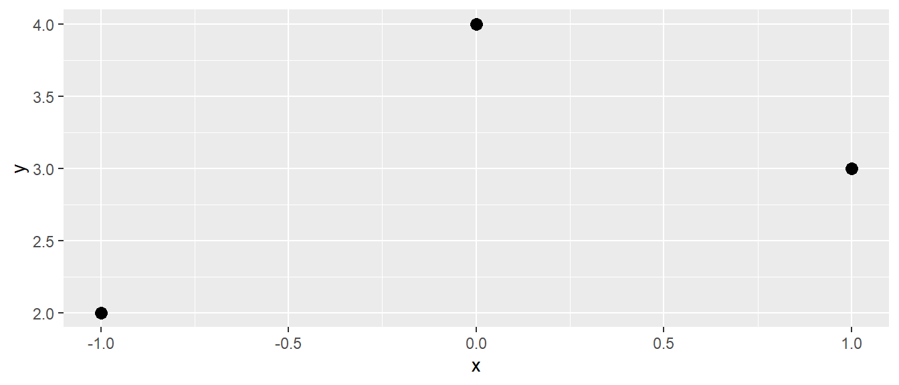

| x | y |
|---|---|
| -1 | 2 |
| 0 | 4 |
| 1 | 3 |
18 Einfache lineare Regression mit Matrizen
Bisher wurden die der einfachen linearen Regression zugrundeliegenden Konzepte mittels eines direkten Ansatzes hergeleitet. Ausgehend von der aus der Schule bekannten Punkt-Steigungsform wurden über die Methode der kleinsten Quadrate direkt die notwendigen Formeln zur Berechnung der Modellkoeffizienten \(\beta_0\) und \(\beta_1\) hergeleitet. In diesen letzten abschließenden Kapitel zum einfachen linearen Regression soll nun wieder eine Abstraktion eingeführt werden, indem die einfache lineare Regression mittels Matrizen aufgebaut werden soll. Dies schafft ein flexibles Instrumentarium das bei der Behandlung der folgenden multiplen Regression und deren Verallgemeinerungen immer wieder von Vorteil sein wird. Um den Inhalten in diesem Kapitel gut folgen zu können, ist wahrscheinlich hilfreich sich nochmal die Inhalte im Anhang zu Vektoren und Matrizen (siehe Anhang A) sowie den R Teil zu den entsprechenden Datentypen (siehe Kapitel 2) durchzulesen. Im ersten Schritt wird das Konzept einer Zufallsvariablen \(X\) auf einen Zufallsvektor \(\mathbf{Y}\) ausgeweitet.
18.1 Zufallsvektoren
In Kapitel 11 wurde das Konzept einer Zufallsvariable \(X\) eingeführt. Dieses wird nun verallgemeinert auf einen Zufallsvektor \(\mathbf{Y}\), bzw. eine Matrix mit nur einer Spalte.
Definition 18.1 (Zufallsmatrix) Eine Zufallsmatrix \(\mathbf{Y}\) ist eine Matrix deren Einträge alle Zufallszahlen sind.
Seien zum Beispiel drei Zufallszahlen \(Y_1, Y_2\) und \(Y_3\) gegeben, dann können diese in eine Matrix \(\mathbf{Y}\) eingetragen werden.
\[ \mathbf{Y} = \begin{pmatrix} Y_1 \\ Y_2 \\ Y_3 \end{pmatrix} \]
Nochmal, eine Zufallsmatrix ist eine Matrix deren einzelnen Einträge Zufallszahlen sind. Allgemein folgt daraus für \(n\) Zufallszahlen \(Y_i\):
\[ \mathbf{Y} = \begin{pmatrix} Y_1 \\ Y_2 \\ \vdots \\ Y_n\end{pmatrix} \]
Da jede Zufallszahl \(Y_i\) einen Erwartungswert \(E[Y_i] = \mu_i\), kann ein Erwartungswert auch auf eine Zufallsmatrix \(\mathbf{Y}\) angwendet werden. Die Erwartungswerte werden dann Komponentenweise berechnet. Im Beispiel.
\[ E[\mathbf{Y}] = \begin{pmatrix} E[Y_1] \\ E[Y_2] \\ E[Y_3] \end{pmatrix} = \begin{pmatrix} \mu_1 \\ \mu_2 \\ \mu_3 \end{pmatrix} \]
Entsprechend allgemein:
\[ E[\mathbf{Y}] = \begin{pmatrix} E[Y_1] \\ E[Y_2] \\ \vdots \\ E[Y_n] \end{pmatrix} = \begin{pmatrix} \mu_1 \\ \mu_2 \\ \vdots \\ \mu_n \end{pmatrix} \]
Soweit ist dementsprechend noch nichts wirklich neues dazugekommen. Die Einführung der Zufallsmatrix kann eher dahingehend gesehen werden, dass man sich Schreibarbeit spart und anstatt für \(n\) Zufallsvariablen \(Y_i, i = 1, 2, \ldots, n\) nun einfach eine Matrix bzw. einen Vektor \(\mathbf{Y}\) verwenden kann. Sind zum Beispiel Weitsprungdaten erhoben worden, dann können diese in einen Vektor geschrieben werden und die Notation mit einem Vektor entspricht dann auch der Repräsentation auf dem Rechner mittels eines Vektors in R.
Da jede Zufallsvariable neben ihrem einen Erwartungswert \(\mu\) auch eine Varianz \(\sigma^2\) besitzt, kann dieses Konzept auch auf die Zufallsmatrix übertragen werden. Allerdings ergibt sich nun der Umstand, dass aus dem Vektor eine richtige Matrix wird, die sogenannte Varianz-Kovarianz-Matrix (VCV) von \(\mathbf{Y}\). Für das Beispiel bedeutet dies:
\[ \text{Var}(\mathbf{Y}) = VCV(\mathbf{Y}) = \begin{pmatrix} \sigma_{Y_1}^2 & \sigma_{Y_1Y_2} & \sigma_{Y_1Y_3} \\ \sigma_{Y_1Y_2} & \sigma_{Y_2}^2 & \sigma_{Y_2Y_3} \\ \sigma_{Y_1Y_3} & \sigma_{Y_3Y_2} & \sigma_{Y_3}^2 \\ \end{pmatrix} \]
Die einzelnen Einträge sollen nun näher betrachtet werden. Auf der Hauptdiagonalen befinden sich die Varianzen der jeweiligen Zufallsvariablen \(Y_1, Y_2\) und \(Y_3\). Die anderen Einträge repräsentieren dagegen die Kovarianzen zwischen zwei der drei Variablen. Zum Beispiel ist der 2. Eintrag in der 1. Zeile \(\sigma_{Y_1Y_2}\) die Kovarianz zwischen \(Y_1\) und \(Y_2\).
Allgemein ergibt sich das folgende Schema für eine Varianz-Kovarianz-Matrix eines Zufallsvektors \(\mathbf{Y}\) mit \(n\) Zufallsvariablen \(Y_i\).
\[ \begin{matrix} & \begin{matrix} \text{Y}_1 \mspace{1em}& \text{Y}_2 & \ldots &\text{Y}_n \end{matrix} \\ \begin{matrix}\text{Y}_1 \\ \text{Y}_2 \\ \vdots \\ \text{Y}_n\end{matrix} & \begin{pmatrix} \sigma_{Y_1}^2 & \sigma_{Y_1Y_2} & \ldots & \sigma_{Y_1Y_n}\\ \sigma_{Y_2Y_1} & \sigma_{Y_2}^2 & & \vdots \\ \vdots & & \ddots & \\ \sigma_{Y_nY_1} & & & \sigma_{Y_n}^2\\ \end{pmatrix} \end{matrix} = VCV(\mathbf{Y}) \]
Da \(\sigma_{XY} = \sigma_{YX}\) gilt, ist die Varianz-Kovarianz-Matrix eine symmetrische Matrix, \(VCV(\mathbf{Y}) = VCV(\mathbf{Y})^T\).
Definition 18.2 (Varianz-Kovarianz-Matrix) Die zu einem Zufallsvektor \(\mathbf{Y}\) gehörige Varianz-Kovarianz-Matrix ist eine symmetrische Matrix deren Einträge auf der Hauptdiagonalen die Varianzen der Zufallsvariablen \(Y_i\) von \(\mathbf{Y}\) sind, während alle Einträge außerhalb der Hauptdiagonalen Kovarianzen zwischen \(Y_i\) und \(Y_i\) mit \(i \neq j\) sind.
Mittels der Regeln der Matrixalgebra lassen sich auch zwei Verallgemeinerungen der Rechenregeln zu den Erwartungswerten und den Varianzen ableiten. Es gilt für eine konstante Matrix \(\mathbf{A}\), d.h. eine Matrix mit nur konstanten Einträgen, der folgenden Zusammenhang:
\[ \begin{gather*} E[\mathbf{AY}] = \mathbf{A}E[\mathbf{Y}] = \mathbf{A}\begin{pmatrix}\mu_1 \\ \mu_2 \\ \vdots \\ \mu_n\end{pmatrix} \end{gather*} \]
Auf das Beispiel übertragen mit \(\mathbf{A} = \begin{pmatrix} 1 & 2 & 3\end{pmatrix}\) folgt:
\[ E[\mathbf{AY}] = \mathbf{A}E[\mathbf{Y}] = \begin{pmatrix} 1 & 2 & 3\end{pmatrix}\begin{pmatrix}\mu_1 \\ \mu_2 \\ \mu_3\end{pmatrix} = \mu_1 + 2 \mu_2 + 3 \mu_3 \]
In diesem Beispiel ist zu sehen, dass die Multiplikation von \(\mathbf{Y}\) mit \(\mathbf{A}\) von links in einem Skalar resultiert.
Für die Varianz ergibt sich ebenfalls eine Regel wie bei einer einfachen Zufallszahl \(Y\). Hier galt die Regel:
\[ \text{Var}(aY) = a^2 \sigma^2_Y \]
D.h. die Varianz \(sigma^2_Y\) von \(Y\) wird mit dem Quadrat von \(a\) multipliziert. Im Fall eines Zufallsvektor \(\mathbf{Y}\) mit einer konstanter Matrix \(\mathbf{A}\) gilt entsprechend:
\[ \text{Var}(\mathbf{AY}) = \mathbf{A}\text{Var}(\mathbf{Y})\mathbf{A}^T = \mathbf{A}\Sigma\mathbf{A}^T \tag{18.1}\]
D.h. die Varianz \(\Sigma\) von \(\mathbf{Y}\) wird auch wieder mit dem Quadrat von \(\mathbf{A}\) multipliziert, nur das \(\mathbf{A}\) von links und transponiert von rechts multipliziert. Für das Beispiel mit \(\mathbf{A} = \begin{pmatrix} 1 & 2 & 3\end{pmatrix}\).
\[ \begin{split} \text{Var}(\mathbf{AY}) &= \begin{pmatrix}1 & 2 & 3\end{pmatrix} \begin{pmatrix} \sigma_{Y_1}^2 & \sigma_{Y_1Y_2} & \sigma_{Y_1Y_3} \\ \sigma_{Y_1Y_2} & \sigma_{Y_2}^2 & \sigma_{Y_2Y_3} \\ \sigma_{Y_1Y_3} & \sigma_{Y_3Y_2} & \sigma_{Y_3}^2 \\ \end{pmatrix} \begin{pmatrix}1 \\ 2\\3\end{pmatrix} \\ &= \begin{pmatrix}1 & 2 & 3\end{pmatrix} \begin{pmatrix} \sigma_{Y_1}^2 + 2\sigma_{Y_1Y_2} + 3\sigma_{Y_1Y_3} \\ \sigma_{Y_1Y_2} + 2\sigma_{Y_2}^2 + 3\sigma_{Y_2Y_3} \\ \sigma_{Y_1Y_3} + 2\sigma_{Y_3Y_2} + 3\sigma_{Y_3}^2 \end{pmatrix} \\ &= \sigma_{Y_1}^2 + 2\sigma_{Y_1Y_2} + 3\sigma{Y_1Y_3} \\ &\ + 2\cdot( \sigma_{Y_1Y_2} + 2\sigma_{Y_2}^2 + 3\sigma_{Y_2Y_3}) \\ &\ + 3\cdot(\sigma_{Y_1Y_3} + 2\sigma_{Y_3Y_2} + 3\sigma_{Y_3}^2) \end{split} \]
D.h. die berechnete Varianz passt zum dem Erwartungswert von \(\mathbf{AY}\), da es sich hier auch nur um einen Skalar handelt. Entsprechend muss die Varianz auch ein Skalar sein. Dies ist natürlich nur für dieses spezielle Beispiel der Fall.
Nachdem nun das Konzept eines Zufallsvektors \(\mathbf{Y}\) eingeführt wurde, kann nun das einfache Regressionsmodell mittels Matrizen behandelt werden.
18.2 Das einfache Regressionsmodell in Matrixform
Noch einmal zur Erinnerung, Ziel ist es nun das Modell für Daten bestehend aus Tupeln der Form \((X_i,Y_i), i=1,2,\ldots,N\) zu finden.
\[ Y_i = \beta_0 + \beta_1\cdot X_i + \epsilon_i, \quad i=1,2,\ldots,N \]
in Matrizenform zu überführen. Ein direkte Möglichkeit wird offensichtlich, wenn die \(N\) Formel untereinander geschrieben werden.
\[ \begin{aligned} Y_1 &= \beta_0 + \beta_1\cdot X_1 + \epsilon_1\\ Y_2 &= \beta_0 + \beta_2\cdot X_2 + \epsilon_2 \\ &\vdots \\ Y_n &= \beta_0 + \beta_n\cdot X_n + \epsilon_n \\ \end{aligned} \]
Ein Überführung in Matrizenform ist jetzt schon relativ offensichtlich. Die Zufallsvariablen \(y_i\) werden in einen Zufallsvektor \(\mathbf{y}\) überführt.
\[ \mathbf{Y} = \begin{pmatrix} Y_1 \\ Y_2 \\ \vdots \\Y_n\end{pmatrix} \]
Die Modellparameter \(\beta_0\) und \(\beta_1\) werden ebenfalls in einen Vektor \(\mathbf{b}\) eingetragen:
\[ \mathbf{b} = \begin{pmatrix} \beta_0 \\ \beta_1 \end{pmatrix} \]
Um nun die auf die Gesamtformel der einfachen linearen Regression zu kommen, wird nun noch eine Matrix \(\mathbf{Y}\) eingeführt, welche die folgende Form hat:
\[ \mathbf{X} = \begin{pmatrix} 1 & X_1 \\ 1 & X_2 \\ \vdots & \vdots \\ 1 & X_n \end{pmatrix} \]
D.h. die Matrix \(\mathbf{X}\) hat zwei Spalten, bei der die Einträge in der ersten Spalten alle gleich \(1\) sind, während in der zweiten Spalte die zu den jeweiligen \(Y_i\)-Werten gehörigen \(X_i\) Werte eingetragen sind. Da die zweite Spalte praktisch immer unterschiedliche Werte enthalten wird, gilt \(\text{Rang}(\mathbf{X}) = 2\). Als letztes werden nun noch die Werte für die Residuen ebenfalls ein einen Zufallsvektor übertragen.
\[ \mathbf{e} = \begin{pmatrix}\epsilon_1 \\ \epsilon_2 \\ \vdots \\ \epsilon_n\end{pmatrix} \]
Insgesamt erlaubt dieses Schema nun das Modell für die einfache lineare Regression in folgender Matrizenform zu notieren:
\[ \begin{split} \mathbf{Y} &= \mathbf{Xb} + \mathbf{e} \\ &= \begin{pmatrix} 1 & X_1 \\ 1 & X_2 \\ \vdots & \vdots \\ 1 & X_n \end{pmatrix} \begin{pmatrix} \beta_0 \\ \beta_1 \end{pmatrix} + \begin{pmatrix}\epsilon_1 \\ \epsilon_2 \\ \vdots \\ \epsilon_n\end{pmatrix} \end{split} \]
Um diese Matrizengleichung für \(\mathbf{b}\) zu lösen wird zunächst \(\mathbf{e}\) vernachlässigt. Es folgt:
\[ \mathbf{Xb} = \mathbf{Y} \]
Nun wird diese Gleichung von links mit \(\mathbf{X}^T\), d.h. mit der Transponierten von \(\mathbf{X}\) multipliziert.
\[ \mathbf{X}^T\mathbf{Xb} = \mathbf{X}^T\mathbf{Y} \]
Die Matrix \(\mathbf{X}^T\mathbf{X}\) resultiert in einer \(2\times 2\) Matrix deren Rang \(2\) ist. D.h. Diese Matrix kann invertiert werden, d.h. es existiert die Matrix \((\mathbf{X}^T\mathbf{X})^{-1}\). Wiederum Muliplikation von links mit dieser Inversen resultiert dann in:
\[ \begin{matrix} & (\mathbf{X}^T\mathbf{X})^{-1}\mathbf{X}^T\mathbf{Xb} &= (\mathbf{X}^T\mathbf{X})^{-1}\mathbf{X}^T\mathbf{Y} \\ \Leftrightarrow & \mathbf{b} &= (\mathbf{X}^T\mathbf{X})^{-1}\mathbf{X}^T\mathbf{Y} \end{matrix} \]
D.h. es wurde eine Lösung für \(\mathbf{b}\) gefunden. Tatsächlich führt diese Matrizenlösung zu der gleichen Lösung wie mittels der Normalengleichungen. Die Herleitung ohne das Weglassen von \(\mathbf{e}\) geht eigentlich wieder über die Minimierung, ist aber hier der Einfachheit halber weggelassen worden.
Um jedoch zu sehen, das tatsächlich die Werte der Normalengleichung herauskommen sei ein einfaches Beispiel betrachtet. Es liegt der folgende Datensatz vor (siehe Tabelle 18.1)
Beziehungsweise graphisch (siehe Abbildung 18.1)

In Matrizenschreibweise ergibt sich:
\[ \mathbf{Y} = \begin{pmatrix}2\\4\\3 \end{pmatrix} = \begin{pmatrix} 1 & -1 \\ 1 & 0 \\ 1 & 1 \end{pmatrix} \begin{pmatrix}\beta_0 \\ \beta_1\end{pmatrix} = \mathbf{Xb} \]
Nun wird zunächst die Matrix \(\mathbf{X}^T\mathbf{X}\) gebildet:
\[ \mathbf{X}^T\mathbf{X} = \begin{pmatrix} 1 & 1 & 1 \\ -1 & 0 & 1 \end{pmatrix} \begin{pmatrix} 1 & -1 \\ 1 & 0 \\1 & 1 \end{pmatrix} = \begin{pmatrix} 3 & 0 \\ 0 & 2 \end{pmatrix} \]
D.h. in diesem Fall ist die Matrix \(\mathbf{X}^T\mathbf{X}\) eine Diagonalmatrix für die eine inverse Matrix einfach gebildet werden kann.
\[ (\mathbf{X}^T\mathbf{X})^{-1} = \begin{pmatrix} \frac{1}{3} & 0 \\ 0 & \frac{1}{2} \end{pmatrix} \]
Dementsprechend resultiert für \((\mathbf{X}^T\mathbf{X})^{-1}\mathbf{X}^T\mathbf{Y}\) der folgende Ausdruck:
\[ \mathbf{b} = (\mathbf{X}^T\mathbf{X})^{-1}\mathbf{X}^T\mathbf{Y} = \begin{pmatrix} \frac{1}{3} & 0 \\ 0 & \frac{1}{2} \end{pmatrix}\begin{pmatrix} 1 & 1 & 1 \\ -1 & 0 & 1 \end{pmatrix} \begin{pmatrix}2\\4\\3 \end{pmatrix} = \begin{pmatrix} 3 \\ \frac{1}{2} \end{pmatrix} \]
Die Berechnung mit R führt zu dem gleichen Ergebnis:
mod <- lm(y ~ x, df)
coef(mod)(Intercept) x
3.0 0.5 Über diese beiden Gleichungen erhalten wir die gewünschten Koeffizienten \(\hat{\beta_0}\) und \(\hat{\beta_1}\). Die Methode wird als die als die Methode der kleinsten Quadrate bezeichnet oder im Englischen Root-Mean-Square (RMS).
Da die Matrix \(\mathbf{X}\) ein zentrale Funktion bei der Berechnung der Koeffizienten hat, hat \(\mathbf{X}\) eine eigene Bezeichnung und wird als Modellmatrix bezeichnet.
Definition 18.3 (Modellmatrix) Die Modellmatrix , auch als Designmatrix oder Regressionsmatrix bezeichnet, ist eine Matrix welche die zur Modellierung verwendeten Daten in Form einer Matrix enthält. Jede Zeile der Modellmatrix repräsentiert einer Beobachtung, während jede Spalte einer Prädiktorvariable entspricht. Per Konvention wird die Modellmatrix wird oft mit dem Buchstaben \(X\) bezeichnet.
In R kann die Modellmatrix mit Hilfe der Funktion model.matrix() erzeugt werden. Im Beispiel führt dies zu:
model.matrix(~x, df) (Intercept) x
1 1 -1
2 1 0
3 1 1
attr(,"assign")
[1] 0 1Beziehungsweise die Modellmatrix kann auch aus dem gefitteten lm-Modell extrahiert werden.
model.matrix(mod) (Intercept) x
1 1 -1
2 1 0
3 1 1
attr(,"assign")
[1] 0 1Mittels der Modellmatrix und den Koeffizienten können die vorhergesagten Werte \(\hat{y}_i\) nun mit einer einfachen Matrixmultiplikation berechnet werden.
\[ \widehat{\mathbf{Y}} = \mathbf{Xb} \tag{18.2}\]
In R übertragen.
X <- model.matrix(mod)
b <- coef(mod)
X %*% b [,1]
1 2.5
2 3.0
3 3.5Dies sind die gleichen Werte die auch durch predict() berechnet werden.
predict(mod) 1 2 3
2.5 3.0 3.5 Letztendlich führt predict() nämlich die gleiche Berechnung im Hintergrund durch.
Sei nochmal die Gleichung betrachtet um die Koeffizienten zu bestimmen:
\[ \mathbf{b} = (\mathbf{X}^T\mathbf{X})^{-1}\mathbf{X}^T\mathbf{Y} \]
Wenn diese Gleichung in Gleichung 18.2 eingesetzt wird, wird der folgende Zusammenhang erhalten:
\[ \widehat{\mathbf{Y}} = \mathbf{Xb} = \mathbf{X}(\mathbf{X}^T\mathbf{X})^{-1}\mathbf{X}^T\mathbf{Y} \]
Der Ausdruck auf der rechten Seite \(\mathbf{X}(\mathbf{X}^T\mathbf{X})^{-1}\mathbf{X}^T\) ist für sich genommen auch wieder eine Matrix der ein Symbol zugeordnet werden kann:
\[ \mathbf{H} = \mathbf{X}(\mathbf{X}^T\mathbf{X})^{-1}\mathbf{X}^T \tag{18.3}\]
Mit dieser Definition ergibt sich der folgende Zusammenhang:
\[ \widehat{\mathbf{Y}} = \mathbf{HY} \]
D.h. die Matrix \(\mathbf{H}\) überführt den Vektor \(\mathbf{Y}\) in den Vektor \(\widehat{\mathbf{Y}}\). D.h. aus den ursprünglichen \(y_i\) Werten werden die vorhergesagten \(\hat{y}_i\)-Werte. Daher wird die Matrix \(\mathbf{H}\) als Hat-Matrix bezeichnet . Die Hat-Matrix hat dabei die Eigenschaft, dass sie symmetrisch ist.
Mit dieser Matrix lässt sich Varianz-Kovarianz-Matrix von \(\mathbf{b} = \hat{\beta}\) berechnen. Zunächst die Varianz-Kovarianz-Matrix von \(\mathbf{Y}\). Unter den Annahmen der einfachen linearen Regression sind die einzelnen Werte unabhängig voneinander. D.h. die Kovarianzen zwischen den \(Y\)-Werten sind gleich Null, formal \(\text{Cov}(Y_i,Y_j) = 0, \forall i \neq j\). Weiterhin sind die Varianzen der \(Y\)-Werte alle gleich. D.h. es gilt \(\text{Var}(Y_i) = \sigma^2\). Übertragen auf die Varianz-Kovarianz-Matrix von \(\mathbf{Y}\) bedeutet dies, das auf der Hauptdiagonalen überall \(\sigma^2\) steht und alle anderen Eintrage gleich Null sind.
\[ \text{Var}(\mathbf{Y}) = \begin{pmatrix} \sigma^2 & 0 & \ldots & 0 \\ 0 & \sigma^2 & \ddots & 0 \\ \vdots & \ddots & \ddots & 0 \\ 0 & \ldots & & \sigma^2 \end{pmatrix} = \sigma^2\begin{pmatrix} 1 & 0 & \ldots & 0 \\ 0 & 1 & \ddots & 0 \\ \vdots & \ddots & \ddots & 0 \\ 0 & \ldots & & 1 \end{pmatrix} = \sigma^2\mathbf{I}_n \]
Dadurch ergibt sich für die Berechnung der Varianz-Kovarianz-Matrix von \(\beta\) der folgende Zusammenhang:
\[ \text{Var}(\beta) = \text{Var}(\mathbf{X}(\mathbf{X}^T\mathbf{X})^{-1}\mathbf{X}^T\mathbf{Y}) \]
Auf der rechten Seite ist nur \(\mathbf{Y}\) eine Zufallsvariable und alle anderen Terme sind Konstanten. Daher gilt unter Anwendung Gleichung 18.1:
\[ \begin{split} \text{Var}(\beta) &= \text{Var}((\mathbf{X}^T\mathbf{X})^{-1}\mathbf{X}^T\mathbf{Y}) \\ &= ((\mathbf{X}^T\mathbf{X})^{-1}\mathbf{X}^T)\text{Var}(\mathbf{Y})((\mathbf{X}^T\mathbf{X})^{-1}\mathbf{X}^T)^T \\ &= ((\mathbf{X}^T\mathbf{X})^{-1}\mathbf{X}^T)\text{Var}(\mathbf{Y})\mathbf{X}\left((\mathbf{X}^T\mathbf{X})^{-1}\right)^T\\ &= (\mathbf{X}^T\mathbf{X})^{-1}\mathbf{X}^T\sigma^2\mathbf{I}\mathbf{X}\left((\mathbf{X}^T\mathbf{X})^{-1}\right)^T\\ &= (\mathbf{X}^T\mathbf{X})^{-1}\mathbf{X}^T\sigma^2\mathbf{I}\mathbf{X}\left((\mathbf{X}^T\mathbf{X})^{T}\right)^{-1}\\ &= (\mathbf{X}^T\mathbf{X})^{-1}\mathbf{X}^T\sigma^2\mathbf{I}\mathbf{X}(\mathbf{X}^T\mathbf{X})^{-1}\\ &= \sigma^2(\mathbf{X}^T\mathbf{X})^{-1}\mathbf{X}^T\mathbf{X}(\mathbf{X}^T\mathbf{X})^{-1} \\ &= \sigma^2(\mathbf{X}^T\mathbf{X})^{-1} \\ \end{split} \]
D.h. die Varianz-Kovarianzmatrix von \(\beta\) berechnet sich nach der folgenden Formel ist also direkt durch die Modellmatrix beeinflusst:
\[ \text{Var}(\beta) = \sigma^2 (\mathbf{X}^T\mathbf{X})^{-1} \tag{18.4}\]
Beispiel 18.1 (VCV von \(\beta\) bei zentrierten \(X\)-Werten) Seien die \(X\)-Werte \(x_i\) zentriert worden, so dass \(\tilde{x}_i = x_i - \bar{x}\) gilt. Für die zentrierten Werte \(\tilde{x}_i\) gilt der Zusammenhang:
\[ \sum_{i=1}^n\tilde{x}_i = 0 \]
Da ja der Mittelwert der zentrierten Werte \(\tilde{x}_i\) durch die Zentrierung gleich Null ist. Für die Modellmatrix ergibt dies:
\[ \mathbf{X} = \begin{pmatrix} 1 & \tilde{x}_1 \\ 1 & \tilde{x}_2 \\ \vdots & \vdots \\ 1 & \tilde{x}_n \end{pmatrix} = \begin{pmatrix} 1 & x_1-\bar{x} \\ 1 & x_2-\bar{x} \\ \vdots & \vdots \\ 1 & x_n-\bar{x} \end{pmatrix} \]
In diesem Fall wird \(\mathbf{X}^T\mathbf{X}\) zu:
\[ \begin{split} \mathbf{X}^T\mathbf{X} &= \begin{pmatrix} 1 & 1 & \cdots & 1 \\ \tilde{x}_1 & \tilde{x}_2 & \cdots & \tilde{x}_n \end{pmatrix} \begin{pmatrix} 1 & \tilde{x}_1 \\ 1 & \tilde{x}_2 \\ \vdots & \vdots \\ 1 & \tilde{x}_n \end{pmatrix} \\ &= \begin{pmatrix} n & \sum_{i=1}^n\tilde{x}_i \\ \sum_{i=1}^n\tilde{x}_i & \sum_{i=1}^n\tilde{x}_i^2 \end{pmatrix} \\ &= \begin{pmatrix} n & 0 \\ 0 & \sum_{i=1}^n\tilde{x}_i^2 \end{pmatrix} \end{split} \]
D.h. die Matrix \(\mathbf{X}^T\mathbf{X}\) ist eine diagonale Matrix, wodurch die Inverse \((\mathbf{X}^T\mathbf{X})^{-1}\) ebenfalls eine Diagonalmatrix ist. Daraus folgt, dass die Kovarianzen von \(\beta_0\) und \(\beta_1\) gleich Null sind und die Steigung \(\beta_1\) und der \(Y\)-Achsenabschnitt voneinander unabhängig sind.
Zum Abschluss sollen nun noch die Residuen \(\epsilon_i\) mittels Matrizen berechnet werden. Der Definition der Residuen folgend:
\[ \epsilon_i = y_i - \hat{y}_i \]
Übertragen in Matrixschreibweise ergibt sich.
\[ \begin{pmatrix} \epsilon_1 \\ \epsilon_2 \\ \vdots \\ \epsilon_n\end{pmatrix} = \mathbf{e} = \mathbf{Y} - \widehat{\mathbf{Y}} = \mathbf{Y} - \mathbf{HY} = (\mathbf{I} - \mathbf{H})\mathbf{Y} \]
Da die Matrizen \(\mathbf{H}\) und \(\mathbf{I}\) beide symmetrisch sind, ist auch \(\mathbf{I} - \mathbf{H}\) symmetrisch.
Die Information in diesem Kapitel sind bieten einen kurzen Einblick in die theoretische Entwicklung der Regression. Wie bereits mehrfach erwähnt, ist es nicht notwendig diese Berechnung tatsächlich von Hand durchführen zu können. Allerdings ist es tatsächlich immer wieder von großem Vorteil zumindest ein paar der Zusammenhänge zu kennen bzw. nachvollziehen zu können, da diese dann doch immer wieder bei der Arbeit mit linearen Modellen und späteren Erweiterungen zum tragen kommen.